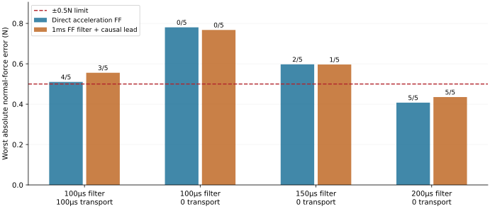

Forty unique native Simulink histories compare four synchronized timing targets and two acceleration-feedforward choices. Every 10s history contains seven sharp bumps. Bars show the largest error across every native sample; labels show the passing cases out of five.

| Filter/transport | Acceleration FF | Heavy worst | Light90° | Passed | Worst margin |
|---|---|---|---|---|---|
| 100/100µs | Direct | 0.5101N | 0.3589N | 4/5 | -0.0101N |
| 100/100µs | Filtered + lead | 0.5556N | 0.3477N | 3/5 | -0.0556N |
| 100/0µs | Direct | 0.7806N | 0.6683N | 0/5 | -0.2806N |
| 100/0µs | Filtered + lead | 0.7676N | 0.6569N | 0/5 | -0.2676N |
| 150/0µs | Direct | 0.5973N | 0.5123N | 2/5 | -0.0973N |
| 150/0µs | Filtered + lead | 0.5965N | 0.5143N | 1/5 | -0.0965N |
| 200/0µs | Direct | 0.4076N | 0.3624N | 5/5 | 0.0924N |
| 200/0µs | Filtered + lead | 0.4353N | 0.3671N | 5/5 | 0.0647N |
Zero transport removes additional whole-sample buffering at synchronous 10kHz acquisition. The identified filter still has analog/group phase. No exact ATI or mounted ADXL part transfer is asserted; bench identification is required.
The immutable primary screen uses continuous first-order ENBW scaling .0123*sqrt(100us/tau), with .02N force-output RMS held fixed. The exact native discrete EMA equivalent is 2.2-3.0% higher at 150-200us and is listed for selected-target confirmation. This bounded screening convention is not a calibrated hardware accuracy claim.
Four heavy clean/noisy records and one light 90deg noisy endpoint per timing/strategy; no interior mass/force/orientation mesh, calibration tolerances or whole prototype qualification. Fixed guide400us intentionally isolates acquisition change and may require retuning.
The first batch stopped externally after 34 saved results. Its last printed progress was32, so the eight-case recovery also repeated cases33–34. Those histories remain preserved as duplicate benchmarks: there are42 executions and40 unique configurations. Inspect the assembled data and evidence links.
Model SHA256 84fb8960b9c679341f6f1f290d2162f6c14db1b0aa8a100899df1f8e36984d56. All histories use the same frozen input candidate and helpers.